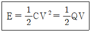
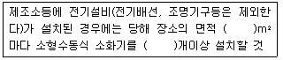
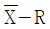
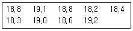

위험물기능장 (2018-03-31 기출문제)
1과목: 임의구분
1. 질산암모늄 80g 이완전분해하여 O2, H2O, N2 가 생성되었다면 이 때 생성물의 총량은 모두 몇 몰인가?
- 2
- 3.5
- 4
- 7
(정답률: 76%)

2. 비중 0.8인 유체의 밀도는 몇 kg/m3인가?
- 800
- 80
- 8
- 0.8
(정답률: 77%)
3. 다음 중 1mol에 포함된 산소의 수가 가장 많은 것은?
- 염소산
- 과산화나트륨
- 과염소산
- 차아염소산
(정답률: 79%)
4. 어떤 유체의 비중이 S, 비중량이 γ이다. 4℃ 물의 밀도가 ρω, 중력가속도가 g일 때 다음 중 옳은 것은?
- γ=Spω
- γ=gpω/S
- γ=Spω/g
- γ=Sgpω
(정답률: 68%)
5. 아세틸렌 1몰이 완전연소하는데 필요한 이론공기량은 약 몇 몰인가?
- 2.5
- 5
- 11.9
- 22.4
(정답률: 57%)
6. 측정하는 유체의 압력에 의해 생기는 금속의 탄성변형을 기계식으로 확대 지시하여 압력을 측정하는 것은?
- 마노미터
- 시차액주계
- 부르돈관압력계
- 오리피스미터
(정답률: 81%)
7. 3.65kg의 염화수소 중에는 HCl 분자가 몇개 있는가?
- 6.02x1023
- 6.02x1024
- 6.02x1025
- 6.02x1026
(정답률: 76%)
8. 과산화나트륨과 묽은 아세트산이 반응하여 생성되는 것은?
- NaOH
- H2O
- Na2O
- H2O2
(정답률: 64%)
9. 위험물안전관리법령상 제6류 위험물 중 “그밖에 행정안전부령이 정하는것”에 해당하는 물질은?
- 아지화합물
- 과요드산화합물
- 염소화규소화합물
- 할로겐간화합물
(정답률: 74%)
10. 줄톰슨(Joule Thomson) 효과가 가장 관계있는 소화기는?
- 할론 1301 소화기
- 이산화탄소 소화기
- HCFC-124 소화기
- 할론 1211 소화기
(정답률: 78%)
11. CH3COCH3에 대한 설명으로 틀린 것은?
- 무색액체이며 독특한 냄새가 있다.
- 물에 잘 녹고 유기산을 잘 녹인다.
- 요오드포름 반응을 한다.
- 비점이 물보다 높지만 휘발성이 강하다.
(정답률: 56%)
12. 제4류 위험물인 C6H5Cl의 지정 수량으로 맞는것은?(오류 신고가 접수된 문제입니다. 반드시 정답과 해설을 확인하시기 바랍니다.)
- 200L
- 400L
- 1,000L
- 2,000L
(정답률: 65%)
13. 96g의 메탄올이 완전 연소 되면 몇 g의 H2O가 생성되는가?
- 54
- 27
- 216
- 108
(정답률: 64%)
14. C6H5CH3 에 대한 설명으로 틀린 것은?
- 끓는점은 약 211℃ 이다.
- 증기는 공기보다 무거워 낮은곳에 체류한다.
- 인화점은 약 4℃ 이다.
- 액의 비중은 약 0.87 이다.
(정답률: 67%)
15. 제5류 위험물에 대한 설명 중 틀린 것은?
- 디아조화학물은 디아조기(-N=N-)를 가진 무기화합물이다.
- 유기과산화물은 산소를 포함하고 있어서 다량으로 연소할 경우 소화에 어려움이 있다.
- 히드라진은제 4류 위험물이지만 히드라진 유도체는 제5류 위험물이다.
- 고체인 물질도있고 액체인 물질도 있다.
(정답률: 71%)
16. 차아염소산 칼슘에 대한 설명으로 옳지 않은 것은?
- 살균제, 표백제로용된다.
- 화학식은 Ca(ClO)2이다.
- 자극성이며 강한 환원력이 있다.
- 지정수량은 50kg이다.
(정답률: 70%)
17. KMnO4 에 대한 설명으로 옳은 것은?
- 글리세린에 저장하여야 한다.
- 묽은질산과 반응하면 유독한 Cl2가 생성된다.
- 황산과 반응할때는 산소와 열을 발생한다.
- 물에 녹으면 투명한 무색을 나타낸다.
(정답률: 69%)
18. 위험물의 지정수량이 적은 것부터 큰 순서대로 나열한 것은?
- 알킬리튬 - 디메틸아연 - 탄화칼슘
- 디메틸아연 - 탄화칼슘 - 알킬리튬
- 탄화칼슘 - 알킬리튬 - 디메틸아연
- 알킬리튬 - 탄화칼슘 - 디메틸아연
(정답률: 67%)
19. 탄화칼슘과 질소가 약 700℃ 이상의 고온에서 반응하여 생성되는 물질은?
- 아세틸렌
- 석회질소
- 암모니아
- 수산화칼슘
(정답률: 71%)
20. 정전기방전에 관한 다음 식에서 사용된 인자의 내용이 틀린 것은?

- E : 정전기에너지(J)
- C : 정전용량(F)
- V : 전압(V)
- Q : 전류(A)
(정답률: 77%)
2과목: 임의구분
21. 제5류 위험물인 테트릴에 대한 설명으로 틀린 것은?
- 물, 아세톤 등에 잘 녹는다.
- 담황색의 결정형 고체이다.
- 비중은 1보다 크므로 물보다 무겁다.
- 폭발력이 커서 폭약의 원료로 사용된다.
(정답률: 53%)
22. 위험물안전관리법령상 유황은 순도가 일정 wt% 이상인 경우 위험물에 해당한다. 이 경우 순도측정에 있어서 불순물에 대한 설명으로 옳은 것은?
- 불순물은 활석 등 불연성 물질에 한한다.
- 불순물은 수분에 한한다.
- 불순물은 활석 등 불연성 물질과 수분에 한한다.
- 불순물은 유황을 제외한 모든 물질을 말한다.
(정답률: 70%)
23. 다음 중 지정수량이 같은 것으로 연결된 것은?
- 알코올류-제 1 석유류(비수용성)
- 제 1 석유류(수용성)-제 2 석유류(비수용성)
- 제 2 석유류(수용성)-제 3 석유류(비수용성)
- 제 3 석유류(수용성)-제 4 석유류
(정답률: 70%)
24. 제4류 위험물인 아세트알데이드의 화학식으로 옳은 것은?
- C2C5CHO
- C2H5COOH
- CH3CHO
- CH3COOH
(정답률: 65%)
25. 공기를 차단한 상태에서 황린을 약 260℃로 가열하면 생성되는 물질은 제 몇 류 위험물인가?
- 제1류 위험물
- 제2류 위험물
- 제5류 위험물
- 제6류 위험물
(정답률: 75%)
26. 다음 금속원소 중 비점이 가장 높은 것은?
- 리튬
- 나트륨
- 칼륨
- 루비듐
(정답률: 74%)
27. 금속나트륨이 에탄올과 반응하였을 때 가연성 가스가 발생한다. 이 때 발생되는 가스와 동일한 가스가 발생되는 경우는?
- 나트륨이 액체 암모니아와 반응 하였을 때
- 나트륨이 산소와 반응 하였을 때
- 나트륨이 사영화탄소와 반응 하였을 때
- 나트륨이 이산화탄소와 반응 하였을 때
(정답률: 71%)
28. 위험물안전관리법령상 불활성가스 소화설비의 기준에서 소화약제 “IG-541”의 성분으로 용량비가 가장 큰 것은?
- 이산화탄소
- 아르곤
- 질소
- 불소
(정답률: 68%)
29. 위험물안전관리법상 150마이크로미터의 체를 통과하는것이 50중량퍼센트 이상일 경우 위험물에 해당하는 것은?
- 철분
- 구리분
- 아연분
- 니켈분
(정답률: 60%)
30. 다음 중 위험물안전관리법상 알코올류가 위험물이 되기 위하여 갖추어야 할 조건이 아닌 것은?
- 한 분자내에 탄소원자수가 1개부터 3개까지 일 것
- 포화 1가 알코올일 것
- 수용액일 경우 위험물안전관리법령에서 정의한 알코올 함유량이 60중량퍼센트 이상일 것
- 인화점 및 연소점이 에틸알코올 60wt% 수용액의 인화점 및 연소점을 초과하는 것
(정답률: 62%)
31. 벤조일퍼옥사이드의 용해성에 대한 설명으로 옳은 것은?
- 물과 대부분 유기용제에 모두 잘 녹는다
- 물과 대부분 유기용제에 모두 잘 녹지 않는다
- 물에는 녹으나 대부분 유기용제에는 녹지 않는다.
- 물에 녹지 않으나 대부분 유기용제에는 녹는다.
(정답률: 69%)
32. 위험물의 연소 특성에 대한 설명으로 옳지 않은 것은?
- 황린은 연소 시 오산화인의 흰 연기가 발생한다.
- 황은 연소 시 푸른불꽃을 내며 이산화질소를 발생한다.
- 마그네슘은 연소 시 섬광을 내며 발열한다.
- 트리에틸알루미늄은 공기와 접촉하면 백연을 발생하며 연소한다.
(정답률: 65%)
33. 제4류 위험물에 해당하는 에어졸의 내장용기 등으로서 용기의 외부에 '위험물의품명ㆍ위험등급ㆍ화학명 및 수용성' 에 대한 표시를 하지 않을 수 있는 최대용적은?
- 300mL
- 500mL
- 150mL
- 1000mL
(정답률: 69%)
34. 위험물안전관리법령에 따른 위험물의 운반에 관한 적재방법에 대한 기준으로 틀린 것은?
- 제1류 위험물, 제2류 위험물 및 제4류 위험물 중 제1석유류, 제5류 위험물은 차광성이 있는 피복으로 가릴 것
- 제1류 위험물 중 알칼리 금속의 과산화물 또는 이를 함유한 것, 제2류 위험물 중 철분ㆍ금속분ㆍ마그네슘 또는 이들 중 어느 하나 이상을 함유한 것 또는 제3류 위험물 중 금수성 물질은 방수성이 있는 피복으로 덮을 것
- 제5류 위험물 중 55℃ 이하의 온도에서 분해될 우려가 있는 보냉 컨테이너에 수납하는 등 적정한 온도관리를 할 것
- 위험물을 수납한 운반용기를 겹쳐쌓는 경우에는 그 높이를 3m이하로 하고, 용기의 상부에 걸리는 하중은 당해 용기 위에 당해 용기와 동종의 용기를 겹쳐쌓아 3m의 높이로 하였을 때의 걸리는 하중 이하로 할 것
(정답률: 57%)
35. 위험물안전관리법령상 제조소등에 있어서 위험물의 취급에 관한 설명으로 옳은 것은?
- 위험물의 취급에 관한 자격이 있는자라 할지라도 안전관리자로 선임되지 않은 자는 위험물을 단독으로 취급할 수 없다.
- 위험물의 취급에 관한 자격이 있는 자가 안전관리자로 선임되지 않았어도 그 자가 참여한 상태에서 누구든지 위험물 취급 작업을 할 수 있다.
- 위험물안전관리자의 대리자가 참여한 상태에서는 누구든지 위험물 취급작업을 할 수 있다.
- 위험물 운송자는 위험물을 이동탱크 저장소에 출하하는 충전하는 일반취급소에서 안전관리자 또는 대리자의 참여 없이 위험물 출하작업을 할 수 있다.
(정답률: 63%)
36. 탱크 시험자가 다른 자에게 등록증을 빌려준 경우의 1차 행정처분 기준으로 옳은 것은?
- 등록취소
- 업무정지 30일
- 업무정지 90일
- 경고
(정답률: 72%)
37. 제4류 위험물 중 경유를 판매하는 제2종 판매 취급소를 허가받아 운영하고자 한다. 취급할 수 있는 최대수량은?
- 2000L
- 40000L
- 80000L
- 160000L
(정답률: 68%)
38. 위험물제조소등의 옥내소화전설비의 설치기준으로 틀린 것은?
- 수원의 수량은 옥내소화전이 가장 많이 설치된 층의 옥내소화전 설치개소(설치개수가 5 개 이상인 경우는 5개)에 2.4m3 를 곱한 양 이상이 되도록 설치할 것
- 옥내소화전은 제조소 등의 건축물의 층마다 당해 층의 각 부분에서 하나의 호스 접속구까지의 수평거리가 25m 이하가 되도록 설치할 것
- 옥내소화전설비는 각 층을 기준으로 하여 당해 층의 모든 옥내소화전(설치개수가 5개 이상인 경우는 5 개의옥내소화전)을 동시에 사용 할 경우에 각 노즐선단의 방수압력이 350kPa 이상이고 방수량이 1 분당 260L 이상의 성능이 되도록 할 것
- 옥내소화전설비에는 비상전원을 설치할 것
(정답률: 68%)
39. 다음은 위험물안전관리법령에 따른 소화설비의 설치기준 중 전기설비의 소화설비 기준에 관한 내용이다. ( )에 알맞은 수치를 차례대로 나타낸 것은?

- 100, 1
- 100, 0.5
- 200, 1
- 200, 0.5
(정답률: 76%)
40. 위험물안전관리법령상 옥내탱크 저장소에 대한 소화난이도 등급 Ⅰ의 기준에 해당하지 않는 것은?
- 액표면적이 40m2 이상인 것(제6류 위험물을 저장하는 것 및 고인화점 위험물만을 100℃ 미만의 온도에서 저장하는 것은 제외)
- 바닥면으로부터 탱크 옆판의 상단까지 높이가 6m 이상인 것(제6류 위험물을 저장하는 것 및 고인화점 위험물만을 100℃ 미만의 온도에서 저장하는 것은 제외)
- 액체위험을 저장하는 탱크로서 용량이 지정수량의 100 배 이상인 것
- 탱크저장실이 단층건물 외의 건축물에 있는 것으로서 인화점 38℃ 이상 70℃ 미만의 위험물을 지정수량의 5배 이상 저장하는 것(내화구조로 개구부없이 구획된 것은 제외)
(정답률: 48%)
3과목: 임의구분
41. 다음 중 위험물 판매취급소의 배합실에서 배합하여서는 안 되는 위험물은?
- 도료류
- 염소산칼륨
- 과산화수소
- 유황
(정답률: 61%)
42. 위험물안전관리법령상의 간이탱크 저장소의 위치ㆍ구조 및 설비의 기준이 아닌 것은?
- 전용실 안에 설치하는 간이저장탱크의 경우 전용실 주위에는 1m 이상의 공지를 두어야 한다.
- 동일한 품질의 위험물의 간이저장탱크를 2이상 설치하지 아니하여야 한다.
- 간이저장탱크는 옥외에 설치하여야하지만, 규정에서 정한 기준에 적합한 전용실안에 설치하는 경우에는 옥내에 설치할 수 있다.
- 간이저장탱크는 70kPa의 압력으로 10분간의 수압시험을 실시하여 새거나 변형되지 아니하여야 한다.
(정답률: 48%)
43. 옥내저장소에서 위험물 용기를 겹쳐 쌓는 경우 그 최대 높이 중 옳지 않은 것은?
- 기계에 의해 하영하는 구조로 된 용기 : 6m
- 제4류 위험물 중 제4 석유류수납용기 : 4m
- 제4류 위험물 중 제1 석유류수납용기 : 3m
- 제4류 위험물 중 동식물유류수납용기 : 6m
(정답률: 68%)
44. 위험물안전관리법령상 알킬알루미늄을 저장 또는 취급하는 이동탱크저장소에 비치하지 않아도 되는 것은?
- 응급조치에 관하여 필요한 사항을 기재한 서류
- 염기성중화제
- 고무장갑
- 휴대용확성기
(정답률: 63%)
45. 옥외탱크 저장소에서 제4 석유류를 저장하는 경우, 방유제 내에 설치할 수 있는 옥외저장탱크의 수는 몇 개 이하이어야 하는가?
- 10
- 20
- 30
- 제한이없다
(정답률: 61%)
46. 위험물안전관리법령에 명시된 위험물 운반용기의 재질이 아닌 것은?
- 강판, 알류미늄판
- 양철판, 유리
- 비닐, 스티로폼
- 금속판, 종이
(정답률: 78%)
47. 위험물안전관리법령에 따라 제조소등의 변경허가를 받아야하는 경우에 속하는 것은?
- 일반 취급소에서 계단을 신설하는 경우
- 제조소에서 펌프설비를 증설하는 경우
- 옥외탱크저장소에서 자동화재 탐지설비를 신설하는 경우
- 판매 취급소의 배출설비를 신설하는 경우
(정답률: 61%)
48. 소화설비의 설치 기준에서 저장소의 건축물은 외벽이 내화구조인 것은 연면적 몇 m2를 1소요단위로 하고, 외벽이 내화구조가 아닌 것은 연면적 몇 m2를 1소요 단위로 하는가?
- 100, 75
- 150, 75
- 200, 100
- 250, 150
(정답률: 72%)
49. 위험물제조소등에 설치되어 있는 스프링클러 소화설비를 정기점검 할 경우 일반점검표에서 헤드의 점검내용에 해당하지 않는 것은?
- 압력계의 지시사항
- 변형ㆍ손상의유무
- 기능의적부
- 부착각도의적부
(정답률: 70%)
50. 위험물안전관리법령상 화학소방자동차에 갖추어야 하는 소화능력 및 설비의 기준으로 옳지 않은 것은?
- 포수용액의 방사능력이 매분 2000 리터 이상인 포수용액 방사차
- 분말의 방사능력이 매초 35kg 이상인 분말 방사차
- 할로겐화합물의 방사능력이 매초 40kg 이상인 할로겐화합물 방사차
- 가성소오다 및 규조토를 각각 100kg 이상비치한 제독차
(정답률: 66%)
51. 위험물안전관리법령상 차량운반시 제4류 위험물과 혼재가 가능한 위험물의 유별을 각각 나타낸 것은? (단, 각각의 위험물은 지정수량의 10배이다.)
- 제2류 위험물, 제3류 위험물
- 제3류 위험물, 제5류 위험물
- 제1류 위험물, 제2류 위험물, 제3류 위험물
- 제2류 위험물, 제3류 위험물, 제5류 위험물
(정답률: 72%)
52. 위험물제조소등의 집유설비에 유분리장치를 설치해야하는 장소는?
- 액상의 위험물을 저장하는 옥내저장소에 설치하는 집유설비
- 휘발유를 저장하는 옥내탱크저장소의 탱크전용실 바닥에 설치하는 집유설비
- 휘발유를 저장하는 간이탱크저장소의 옥외설비 바닥에 설치하는 집유설비
- 경유를 저장하는 옥외탱크저장소의 옥외펌프설비에 설치하는 집유설비
(정답률: 61%)
53. 위험물안전관리법령상 위험물옥외탱크저장소의 방유제 지하매설 깊이는 몇 m 이상으로 하여야 하는가? (단, 원칙적인 경우에 한한다.)
- 0.2
- 0.3
- 0.5
- 1.0
(정답률: 64%)
54. 바닥면적이 120m2인 제조소인 경우에 환기설비인 급기구의 최소 설치개수와 최소 크기는?(오류 신고가 접수된 문제입니다. 반드시 정답과 해설을 확인하시기 바랍니다.)
- 1개, 800cm2
- 1개, 600cm2
- 2개, 800cm2
- 2개, 600cm2
(정답률: 62%)
55. 어떤 회사의 매출액이 80000원, 고정비가 15000원, 변동비가 40000원 일 때 손익분기점 매출액은 얼마인가?
- 25000 원
- 30000 원
- 40000 원
- 55000 원
(정답률: 63%)
56. 직물, 금속, 유리 등의 일정단위중 나타나는 흠의수, 핀홀수 등 부적합수에 관한 관리도를 작성하려면 가장 적합한 관리도는?
- c관리도
- np관리도
- p관리도

관리도
(정답률: 56%)
57. 전수검사와 샘플링검사에 관한 설명으로 맞는 것은?
- 파괴검사의 경우에는 전수검사를 적용한다.
- 검사항목이 많을 경우 전수검사보다 샘플링 검사가 유리하다.
- 샘플링검사는 부적합품이 섞여 들어가서는 안되는 경우에 적용한다.
- 생산자에게 품질향상의 자극을 주고 싶을 경우 전수검사가 샘플링검사보다 더 효과적이다.
(정답률: 74%)
58. 국제 표준화의 의의를 지적한 설명 중 직접적인 효과로 보기 어려운 것은?
- 국제간 규격통일로 상호 이익도모
- KS 표시품 수출 시 상대국에서 품질인증
- 개발도상국에 대한 기술개발의 촉진을 유도
- 국가간의 규격상이로 인한 무역장벽의 제거
(정답률: 66%)
59. Ralph M. Barnes 교수가 제시한 동작경제의 원칙 중 작업장 배치에 관한 원칙(Arrangement of the workplace)에 해당되지 않는 것은?
- 가급적이면 낙하식 운반방법을 이용한다.
- 모든 공구나 재료는 지정된 위치에 있도록 한다.
- 적절한 조명을 하여 작업자가 잘 보면서 작업할 수 있도록 한다.
- 가급적 용이하고 자연스런 리듬을 타고 일할 수 있도록 작업을 구성하여야 한다.
(정답률: 68%)
60. 다음 데이터의 제곱합(sum of squares)은 약 얼마인가?

- 0.129
- 0.338
- 0.359
- 1.029
(정답률: 53%)
2NH4NO3 → 2N2 + O2 + 4H2O
따라서 80g의 질산암모늄이 분해되면 N2 2 몰, O2 1 몰, H2O 4 몰이 생성됩니다. 따라서 생성물의 총 몰 수는 2+1+4=7 몰이 됩니다. 이에 따라 보기에서 정답이 "3.5"인 이유는 7 몰을 2로 나눈 값이 3.5이기 때문입니다.